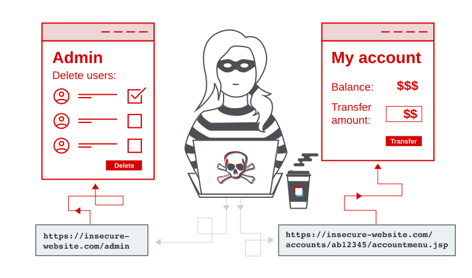

Access control vulnerabilities and privilege escalation
In this section, we describe:
- Privilege escalation.
- The types of vulnerabilities that can arise with access control.
- How to prevent access control vulnerabilities.
Labs
If you're familiar with the basic concepts behind access control vulnerabilities and want to practice exploiting them on some realistic, deliberately vulnerable targets, you can access labs in this topic from the link below.
What is access control?
Access control is the application of constraints on who or what is authorized to perform actions or access resources. In the context of web applications, access control is dependent on authentication and session management:
- Authentication confirms that the user is who they say they are.
- Session management identifies which subsequent HTTP requests are being made by that same user.
- Access control determines whether the user is allowed to carry out the action that they are attempting to perform.
Broken access controls are common and often present a critical security vulnerability. Design and management of access controls is a complex and dynamic problem that applies business, organizational, and legal constraints to a technical implementation. Access control design decisions have to be made by humans so the potential for errors is high.

Read more
Vertical access controls
Vertical access controls are mechanisms that restrict access to sensitive functionality to specific types of users.
With vertical access controls, different types of users have access to different application functions. For example, an administrator might be able to modify or delete any user's account, while an ordinary user has no access to these actions. Vertical access controls can be more fine-grained implementations of security models designed to enforce business policies such as separation of duties and least privilege.
Horizontal access controls
Horizontal access controls are mechanisms that restrict access to resources to specific users.
With horizontal access controls, different users have access to a subset of resources of the same type. For example, a banking application will allow a user to view transactions and make payments from their own accounts, but not the accounts of any other user.
Context-dependent access controls
Context-dependent access controls restrict access to functionality and resources based upon the state of the application or the user's interaction with it.
Context-dependent access controls prevent a user performing actions in the wrong order. For example, a retail website might prevent users from modifying the contents of their shopping cart after they have made payment.
Examples of broken access controls
Broken access control vulnerabilities exist when a user can access resources or perform actions that they are not supposed to be able to.
Vertical privilege escalation
If a user can gain access to functionality that they are not permitted to access then this is vertical privilege escalation. For example, if a non-administrative user can gain access to an admin page where they can delete user accounts, then this is vertical privilege escalation.
Unprotected functionality
At its most basic, vertical privilege escalation arises where an application does not enforce any protection for sensitive functionality. For example, administrative functions might be linked from an administrator's welcome page but not from a user's welcome page. However, a user might be able to access the administrative functions by browsing to the relevant admin URL.
For example, a website might host sensitive functionality at the following URL:
https://insecure-website.com/admin
This might be accessible by any user, not only administrative users who have a link to the functionality in their user interface. In some cases, the administrative URL might be disclosed in other locations, such as the robots.txt file:
https://insecure-website.com/robots.txtEven if the URL isn't disclosed anywhere, an attacker may be able to use a wordlist to brute-force the location of the sensitive functionality.
In some cases, sensitive functionality is concealed by giving it a less predictable URL. This is an example of so-called "security by obscurity". However, hiding sensitive functionality does not provide effective access control because users might discover the obfuscated URL in a number of ways.
Imagine an application that hosts administrative functions at the following URL:
https://insecure-website.com/administrator-panel-yb556This might not be directly guessable by an attacker. However, the application might still leak the URL to users. The URL might be disclosed in JavaScript that constructs the user interface based on the user's role:
<script>
var isAdmin = false;
if (isAdmin) {
...
var adminPanelTag = document.createElement('a');
adminPanelTag.setAttribute('href', 'https://insecure-website.com/administrator-panel-yb556');
adminPanelTag.innerText = 'Admin panel';
...
}
</script>This script adds a link to the user's UI if they are an admin user. However, the script containing the URL is visible to all users regardless of their role.
Parameter-based access control methods
Some applications determine the user's access rights or role at login, and then store this information in a user-controllable location. This could be:
- A hidden field.
- A cookie.
- A preset query string parameter.
The application makes access control decisions based on the submitted value. For example:
https://insecure-website.com/login/home.jsp?admin=true
https://insecure-website.com/login/home.jsp?role=1This approach is insecure because a user can modify the value and access functionality they're not authorized to, such as administrative functions.
Broken access control resulting from platform misconfiguration
Some applications enforce access controls at the platform layer. they do this by restricting access to specific URLs and HTTP methods based on the user's role. For example, an application might configure a rule as follows:
DENY: POST, /admin/deleteUser, managers
This rule denies access to the POST method on the URL /admin/deleteUser, for users in the managers group. Various things can go wrong in this situation, leading to access control bypasses.
Some application frameworks support various non-standard HTTP headers that can be used to override the URL in the original request, such as X-Original-URL and X-Rewrite-URL. If a website uses rigorous front-end controls to restrict access based on the URL, but the application allows the URL to be overridden via a request header, then it might be possible to bypass the access controls using a request like the following:
POST / HTTP/1.1
X-Original-URL: /admin/deleteUser
...
An alternative attack relates to the HTTP method used in the request. The front-end controls described in the previous sections restrict access based on the URL and HTTP method. Some websites tolerate different HTTP request methods when performing an action. If an attacker can use the GET (or another) method to perform actions on a restricted URL, they can bypass the access control that is implemented at the platform layer.
Broken access control resulting from URL-matching discrepancies
Websites can vary in how strictly they match the path of an incoming request to a defined endpoint. For example, they may tolerate inconsistent capitalization, so a request to /ADMIN/DELETEUSER may still be mapped to the /admin/deleteUser endpoint. If the access control mechanism is less tolerant, it may treat these as two different endpoints and fail to enforce the correct restrictions as a result.
Similar discrepancies can arise if developers using the Spring framework have enabled the useSuffixPatternMatch option. This allows paths with an arbitrary file extension to be mapped to an equivalent endpoint with no file extension. In other words, a request to /admin/deleteUser.anything would still match the /admin/deleteUser pattern. Prior to Spring 5.3, this option is enabled by default.
On other systems, you may encounter discrepancies in whether /admin/deleteUser and /admin/deleteUser/ are treated as distinct endpoints. In this case, you may be able to bypass access controls by appending a trailing slash to the path.
Horizontal privilege escalation
Horizontal privilege escalation occurs if a user is able to gain access to resources belonging to another user, instead of their own resources of that type. For example, if an employee can access the records of other employees as well as their own, then this is horizontal privilege escalation.
Horizontal privilege escalation attacks may use similar types of exploit methods to vertical privilege escalation. For example, a user might access their own account page using the following URL:
https://insecure-website.com/myaccount?id=123
If an attacker modifies the id parameter value to that of another user, they might gain access to another user's account page, and the associated data and functions.
Note
This is an example of an insecure direct object reference (IDOR) vulnerability. This type of vulnerability arises where user-controller parameter values are used to access resources or functions directly.
In some applications, the exploitable parameter does not have a predictable value. For example, instead of an incrementing number, an application might use globally unique identifiers (GUIDs) to identify users. This may prevent an attacker from guessing or predicting another user's identifier. However, the GUIDs belonging to other users might be disclosed elsewhere in the application where users are referenced, such as user messages or reviews.
In some cases, an application does detect when the user is not permitted to access the resource, and returns a redirect to the login page. However, the response containing the redirect might still include some sensitive data belonging to the targeted user, so the attack is still successful.
Horizontal to vertical privilege escalation
Often, a horizontal privilege escalation attack can be turned into a vertical privilege escalation, by compromising a more privileged user. For example, a horizontal escalation might allow an attacker to reset or capture the password belonging to another user. If the attacker targets an administrative user and compromises their account, then they can gain administrative access and so perform vertical privilege escalation.
An attacker might be able to gain access to another user's account page using the parameter tampering technique already described for horizontal privilege escalation:
https://insecure-website.com/myaccount?id=456If the target user is an application administrator, then the attacker will gain access to an administrative account page. This page might disclose the administrator's password or provide a means of changing it, or might provide direct access to privileged functionality.
Insecure direct object references
Insecure direct object references (IDORs) are a subcategory of access control vulnerabilities. IDORs occur if an application uses user-supplied input to access objects directly and an attacker can modify the input to obtain unauthorized access. It was popularized by its appearance in the OWASP 2007 Top Ten. It's just one example of many implementation mistakes that can provide a means to bypass access controls.
Read more
Access control vulnerabilities in multi-step processes
Many websites implement important functions over a series of steps. This is common when:
- A variety of inputs or options need to be captured.
- The user needs to review and confirm details before the action is performed.
For example, the administrative function to update user details might involve the following steps:
- Load the form that contains details for a specific user.
- Submit the changes.
- Review the changes and confirm.
Sometimes, a website will implement rigorous access controls over some of these steps, but ignore others. Imagine a website where access controls are correctly applied to the first and second steps, but not to the third step. The website assumes that a user will only reach step 3 if they have already completed the first steps, which are properly controlled. An attacker can gain unauthorized access to the function by skipping the first two steps and directly submitting the request for the third step with the required parameters.
Referer-based access control
Some websites base access controls on the Referer header submitted in the HTTP request. The Referer header can be added to requests by browsers to indicate which page initiated a request.
For example, an application robustly enforces access control over the main administrative page at /admin, but for sub-pages such as /admin/deleteUser only inspects the Referer header. If the Referer header contains the main /admin URL, then the request is allowed.
In this case, the Referer header can be fully controlled by an attacker. This means that they can forge direct requests to sensitive sub-pages by supplying the required Referer header, and gain unauthorized access.
Location-based access control
Some websites enforce access controls based on the user's geographical location. This can apply, for example, to banking applications or media services where state legislation or business restrictions apply. These access controls can often be circumvented by the use of web proxies, VPNs, or manipulation of client-side geolocation mechanisms.
How to prevent access control vulnerabilities
Access control vulnerabilities can be prevented by taking a defense-in-depth approach and applying the following principles:
- Never rely on obfuscation alone for access control.
- Unless a resource is intended to be publicly accessible, deny access by default.
- Wherever possible, use a single application-wide mechanism for enforcing access controls.
- At the code level, make it mandatory for developers to declare the access that is allowed for each resource, and deny access by default.
- Thoroughly audit and test access controls to ensure they work as designed.